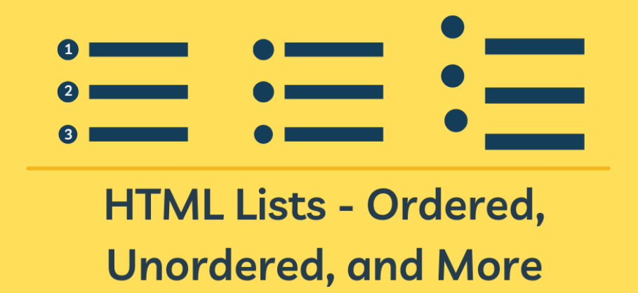

Listas

Imagen tomada de https://www.freecodecamp.org/news/html-list-how-to-use-bullet-points-ordered-and-unordered-lists/
Permiten crear conjuntos de elementos para presentarlos en forma de lista en una pagina Web. Los
elementos que
hacen parte
de una lista, son precedidos por un numero, letra, guion, circulo, cuadrado, que los describe como parte
del
listado que se quiere mostrar.
Existen tres tipos de Listas, que pueden ser creadas en HTML:
- Listas Ordenadas: Nos muestran los elementos en orden. Este ultimo se representa por medio de
una
numeracion; ya sea
usando numeros o letras del alfabeto. En otras palabras, cada elemento, sera precedido por un numero
o una
letra.
- Listas Desordenadas: Muestran los elementos, sin ningun tipo de orden. Es decir, que cada uno
de los
elementos que hacen
parte de la lista, seran precedidos por una vineta o caracter, que puede ser un circulo, un
cuadrado, un
punto, entre otras opciones
- Lista de Definiciones: Sirven para presentar una lista que incluye una palabra o termino y su
definicion. Se suelen emplear
para presentar definiciones de terminos, estilo diccionario. La ventaja que ofrece, este tipo de
lista, es que
en su estructuracion, el
visitante del sitio web, tendra claro, el termino y su definicion.
Un caso especial de las Listas, son las que se conocen como "Anidadas", que es simplemente, la opcion de
que una
lista incluya otras listas. La caracteristica
mas importante, de este caso, es que pueden ser listas anidadas de las tres previamente explicadas:
Ordenada,
desordenada y Definida.
Las Listas Ordenadas se definen dentro de las etiquetas: "ol" para abrir y "/ol" para cerrar.
Las Listas Desordenadas se definen dentro de las etiquetas: "ul" para abrir "/ul" para cerrar.
Las Listas Definidas se enmarcan dentro de las etiquetas: "dl" para abrir y "/ul" para cerrar.
Para cualquiera de las etiquetas a usar, recordemos que es indispensable incluirlas dentro de los
caracteres
"<>".
Referencias Bibliograficas
- Delgado, H. Julio 9, 2021. Learning Web Design. HTML Lists - Wtihout unordered ul, order ol, and
definition
dl. Disponible en: https://disenowebakus.net/en/lists-html.
- Lemay, L. (1995). Web publishing with HTML in a week. Sams.
- Manual Web. (2021). Listas HTML. Disponible en: http://www.manualweb.net/html/listas-html/.
- Desarrolladoresweb.org. Julio 12, 2019. Listas en HTML - Como crear y poner Vinetas. Disponible en:
https://desarrolladoresweb.org/html/listas-en-html/.
Enlaces
Imagen tomada de https://medium.com/@quadrishah846/adding-and-editing-links-in-html-14ff46342d3a
Los enlaces son el corazon y la parte vital en el lenguaje HTML. Son la razon de la existencia de la
Internet o
la WWW (World Wide Web). De manera general
este elemento en conjunto con las otras funcionalidades disponibles en HTML, son los que permiten a un
usuario
ir de un documento a otro, de una pagina a otra, de
un sitio a otro, con solo dar "click" en el enlace referenciado en la pagina Web.
La Funcionalidad basica de un enlace, es hacer referencia desde un documento HTML a otro recurso, que
puede ser,
como lo hemos mencionado previamente,
otro documento. En otras palabras, un enlace define una relacion entre dos (2) recursos en la web.
Un Enlace esta compuesto por dos puntas, denominadas anclas (anchors en ingles), y una direccion. El
enlace
comienza en el ancla fuente u origen y apunta hacia
el ancla destino. Este ultimo puede ser: una imagen, un video, un programa, un documento HTML, una
pagina web.
Las Etiquetas que hay disponibles para referenciar o enlazar a otros recursos en la Web son:
- Etiqueta a: Se usa para insertar enlaces dentro del contenido de un documento. Proporciona a
los
creadores del sitio Web, el mecanismo
para redigir los usuarios o para recomendarles, otro recurso disponible donde pueden encontrar mayor
informacion sobre el tema descrito en la pagina consultada.
- Enlace de Correo (email): Este tipo de enlace, en particular, no se usa para llegar a un
nuevo
recurso; sino para, enviar mensajes usando el correo electronico, a la cuenta Especifica
referida en el enlace. Se identifica, porque usan la palabra "mailto".
- Elemento Link: Este tipo de enlace es muy particular, porque, es usado para proporcionar
informacion
relacional acerca del documento HTML. Por lo anterior, es
declarado en "head". Las variadas relaciones que este elemento puede establecer, dependen
principalmente del
valor del atributo "rel". Los casos de uso
mas comunes, permiten a traves de este elemento la definicion de la estructura del sitio Web,
proporcionar
versiones alternativas del documento o apunta a recursos externos con informacion de "estilo" para
el
documento.
- Enlazando Fragmentos: Es un caso especial, que permite enlazar a un fragmento especifico en
otro
documento. Para que esto sea posible
es requerido agregar un atributo de "id" al parrafo al que se quiere enlazar. Luego de esto, en el
documento
HTML, donde se quiere realizar el enlace al fragmento, se debe
usar el elemento "a" incluyendo la referencia "id", previamente definida
A los enlaces, tambien se les conoce como "hipervinculos" (hyperlinks en ingles), y es importante
destacar que
el uso de este elemento es el que ha
permitido el desarrollo y auge de la Web. Ya que, es a traves de los enlaces, como cada uno de nosotros,
podemos
ir de un sitio a otro, buscar referencias,
enlazar investigaciones, documentos; es decir, facilita la busqueda de informacion, lo que antes podia
tomar
dias, hoy lo podemos hacer en cuestion de minutos.
Referencias Bibliograficas
- Manual Web. (2021). Enlaces HTML. Disponible en: http://www.manualweb.net/html/enlaces-html/.
- Delgado, H. Julio 9, 2021. HTML Links a tags - Hyperlinks, href, target blank. Recuperado de:
https://disenowebakus.net/en/hyperlinks-html.
- Ponce, D. (s.f.). Links in HTML. Disponible en: https://www.htmlquick.com/tutorials/links.html.
- World Wide Web Consortium. (1999). HTML 4.01 specification.